Quantum State Tomography
What is the quantum state tomography?
Quantum State Tomography is the process by which an identical ensemble of unknown quantum states is completely characterized. A sequence of identical measurements within a series of different bases allow the reconstruction of a complete quantum state wavefunction.
Measurements of multiple types reconstruct a quantum state from different eigenbases, just as classical tomography can image a three-dimensional object by scanning it from different physical directions. Additional measurements in any single basis bring that dimension into sharper relief.
There is a way to reduce from the two-qubit tomography to single qutrit tomography as shown in the picture below, but we want a way to reduce to direct.
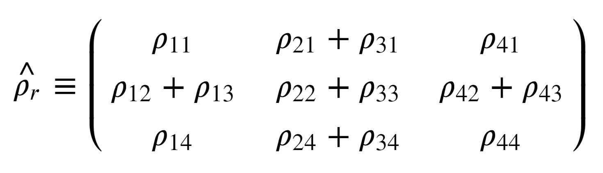
with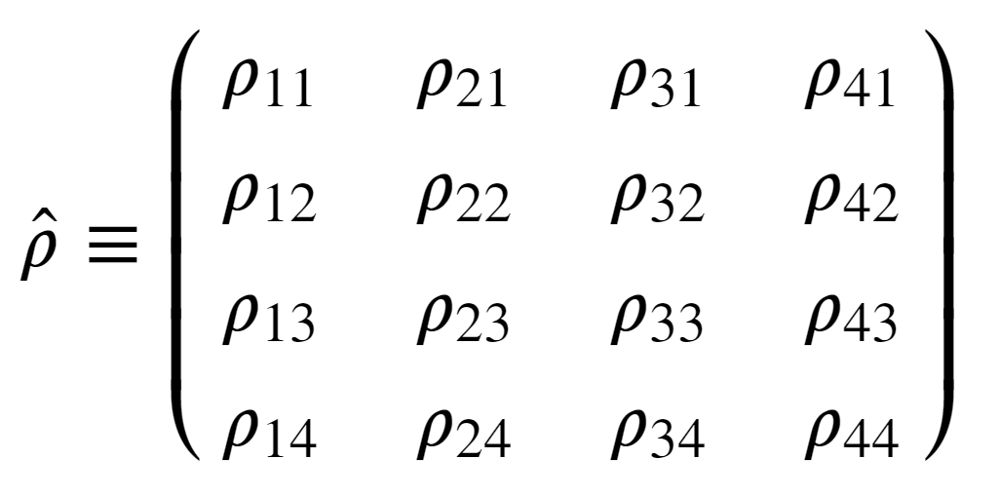
How can we get the idea for constructing directly qutrit tomography?
In our case, by using polarizations of two photons, we'll define the basic state as below. It means that we restrict two photons that are indistinguishable in terms of spatial, spectral, or temporal parameters.
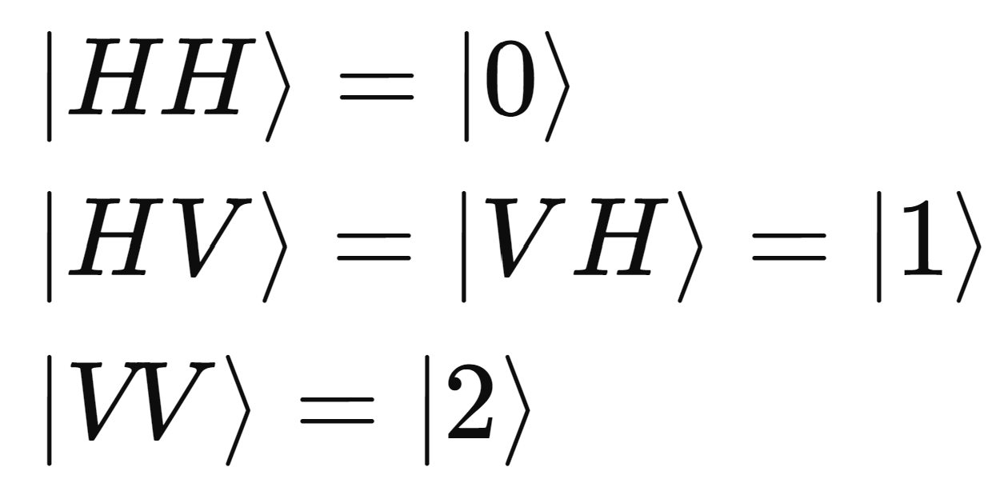
By restricting two photons to a qutrit, pure polarization state of a single qutrit can be written as,
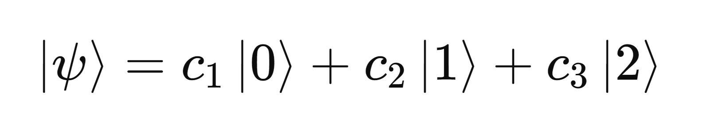
,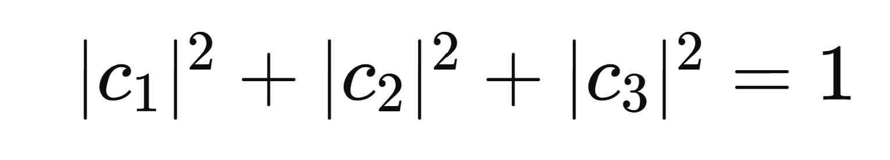
Construct the single qutrit tomography step by step.
To construct the tomography more accurately, let's assume that instead of counting count, we have an arbitrary test state. For example, our test state is as follows.
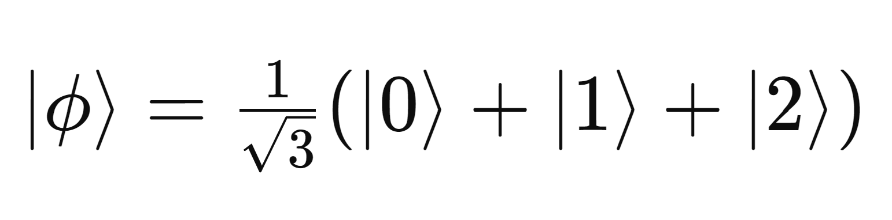
STEP 1. Set the proper nine bases for capturing every appearance.
For easier experimental implementation, nine out of 36 polarization states of two photons were selected with the condition that they capture every appearance of unknown state as below.
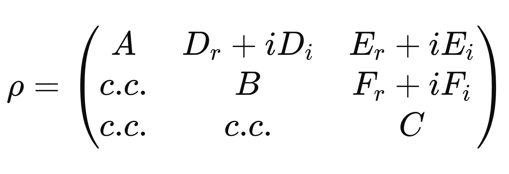
And satisfying above conditions, we select the nine bases: HH, HV, VV, HD, HR, DR, VR, DD, RR.
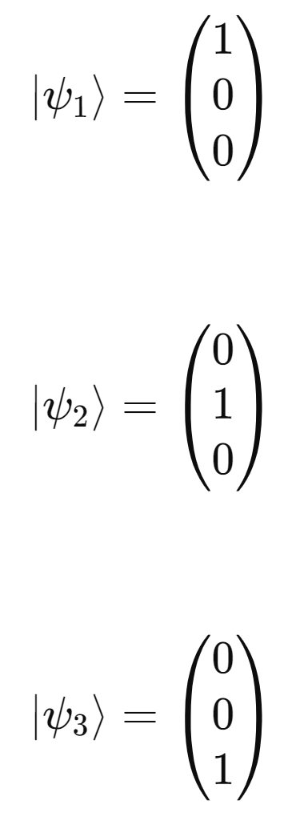
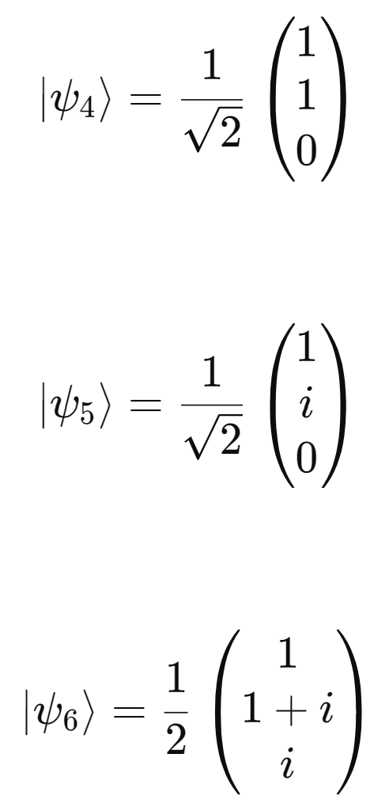
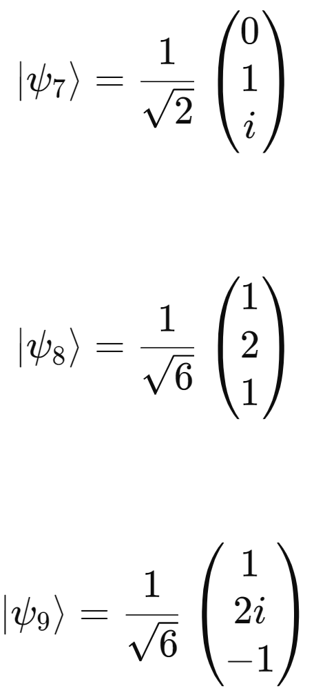
STEP 2. Construct nine measurement operators.
With a set of bases, construct the measurement operators corresponding to coincidence count each other.
STEP 3. Find the probability (same as finding the normalized coincidence count).
If you have experimental data, coincidence count, you need this step. Because this step is just the process of getting a normalized coincidence count. We can use this.
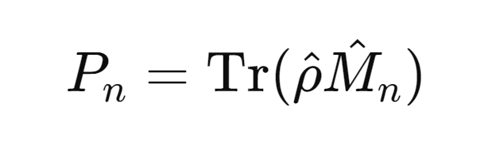
And it's the probability of each basis with my test state. This data is just normalized coincidence count, HH + HV + VV = 1.
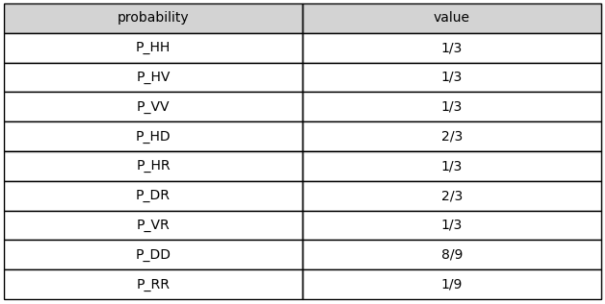
STEP 4. Use Log Maximum Likelihood estimation for reconstructing density matrix.
Photon follows a Poisson distribution, but by Central Limit Theorem, it follows a Gaussian distribution. To minimize,
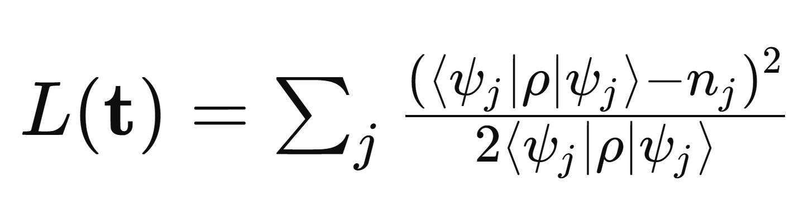
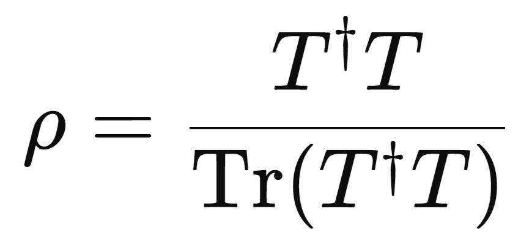
with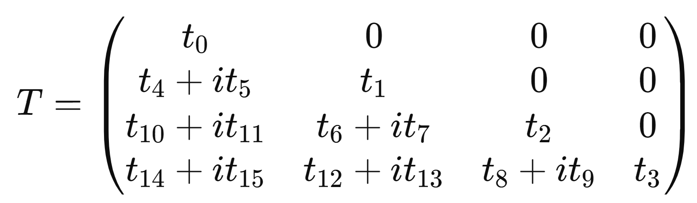
And considering three physical constraint conditions,
(1) Hermiticity : The density matrix must be Hermitian.
(2) Positive Semi-Definiteness : The density matrix must have non-negative eigenvalues, meaning that for any vector.
(3) Trace Condition : The trace of the density matrix must be equal to one.
STEP 5. Check the fidelity with density matrix of test state.
Fidelity is a measure of state overlap. That is, if fidelity is 1, we successfully reconstruct physical density matrix. The fidelity between 𝜌 and 𝜎,
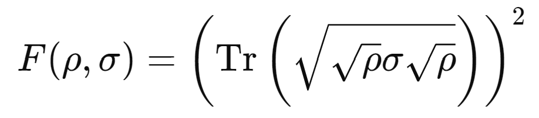
If fidelity > 1, the eigenvalue of the density matrix will be negative. In this case, we change the negative eigenvalue to 0 and renormalize the density matrix.
Let's construct single qutrit tomography with log maximum likelihood estimation!
If you want to see the code according to this.. click here!